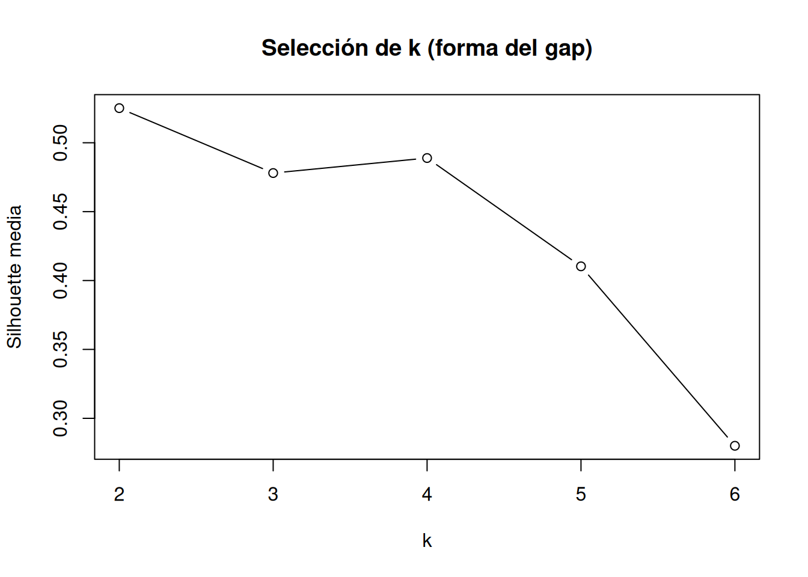
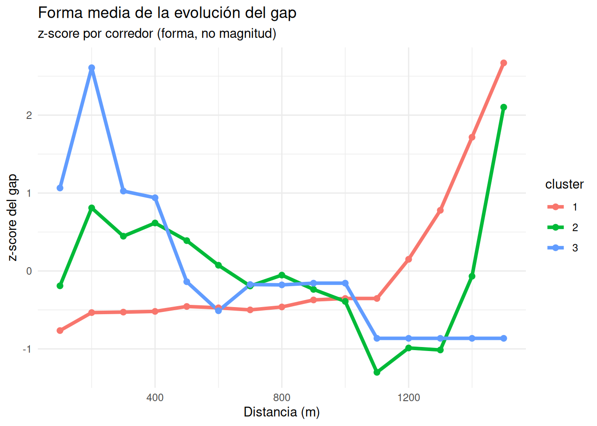

library(dplyr)library(tidyr)split_cols <-grep("^\\d+m$", names(datos), value =TRUE)# 1) Datos a formato largo: un split por corredor y distancialong <- datos %>%select(Competitor, all_of(split_cols)) %>%pivot_longer(cols =all_of(split_cols),names_to ="split",values_to ="split_time") %>%mutate(dist_m =as.integer(sub("m$", "", split))) %>%arrange(Competitor, dist_m)# 2) Tiempo acumulado por corredorlong <- long %>%group_by(Competitor) %>%mutate(cum_time =cumsum(split_time)) %>%ungroup()# 3) "Cabeza de carrera": mínimo tiempo acumulado en cada distancialeader_cum <- long %>%group_by(dist_m) %>%summarise(leader_cum_time =min(cum_time, na.rm =TRUE), .groups ="drop")# 4) Velocidad del líder en ese tramo (m/s): usando el split más rápido en ese tramoleader_speed <- long %>%group_by(dist_m) %>%summarise(leader_split_time =min(split_time, na.rm =TRUE), .groups ="drop") %>%mutate(v_leader =100/ leader_split_time)# 5) Gap en tiempo y conversión a metros (aprox)gap_ts <- long %>%left_join(leader_cum, by ="dist_m") %>%left_join(leader_speed, by ="dist_m") %>%mutate(gap_time_sec = cum_time - leader_cum_time,gap_m = gap_time_sec * v_leader ) %>%select(Competitor, dist_m, split_time, cum_time, gap_time_sec, gap_m) %>%arrange(Competitor, dist_m)gap_ts
plot(k_grid, sil_gap, type ="b",xlab ="k",ylab ="Silhouette media",main ="Selección de k (forma del gap)")

También podemos elegir a mano el número de clusters.
k_best_gap=3
3.7 Asignar clusters
clusters_gap <-cutree(hc_gap, k = k_best_gap)res_gap <-data.frame(Competitor = competitors,cluster_gap =factor(clusters_gap)) %>%arrange(cluster_gap)res_gap
Competitor cluster_gap
Agathe Guillemot Agathe Guillemot 1
Elle St. Pierre Elle St. Pierre 1
Gudaf Tsegay Gudaf Tsegay 1
Klaudia Kazimierska Klaudia Kazimierska 1
Nikki Hiltz Nikki Hiltz 1
Susan Lokayo Ejore Susan Lokayo Ejore 1
Águeda Marqués Águeda Marqués 1
Diribe Welteji Diribe Welteji 2
Georgia Hunter Bell Georgia Hunter Bell 2
Jessica Hull Jessica Hull 2
Laura Muir Laura Muir 2
Faith Kipyegon Faith Kipyegon 3
3.8 Visualizar forma media del gap por cluster
library(ggplot2)Gshape_df <-as.data.frame(Gshape)Gshape_df$Competitor <-rownames(Gshape)Gshape_df$cluster <-factor(clusters_gap)Gshape_long <- Gshape_df %>%pivot_longer(cols =-c(Competitor, cluster),names_to ="dist_m",values_to ="z_gap") %>%mutate(dist_m =as.numeric(dist_m))cluster_mean_gap <- Gshape_long %>%group_by(cluster, dist_m) %>%summarise(z_mean =mean(z_gap), .groups ="drop")ggplot(cluster_mean_gap,aes(x = dist_m, y = z_mean, color = cluster)) +geom_line(linewidth =1.4) +geom_point(size =2) +labs(title ="Forma media de la evolución del gap",subtitle ="z-score por corredor (forma, no magnitud)",x ="Distancia (m)",y ="z-score del gap" ) +theme_minimal()

3.9 Interpretación
Con esta normalización:
Curva creciente → el corredor se va descolgando progresivamente.
Curva decreciente → recorta distancia respecto a su media (remontador).
Curva plana → mantiene posición relativa.
Pico al final → pierde mucho al final.
Valle al final → ataque final.
Este enfoque:
Agrupa por patrón temporal
Es independiente del nivel absoluto
Es comparable entre carreras
Pero la distancia Euclídea penaliza desfases temporales. Si un corredor pierde contacto 200 m más tarde que otro, pueden parecer distintos aunque la dinámica sea similar. Si se busca algo más sofisticado para series temporales reales, la siguiente mejora sería usar DTW (Dynamic Time Warping) en lugar de dist().
3.10 Generar Etiquetas
Queremos distinguir dinámicas como:
🟢 Se mantiene estable
🔴 Se descuelga progresivamente
🔵 Remonta progresivamente
🟠 Se hunde al final
🟣 Ataque final
⚪ Dinámica mixta
3.10.1 Calcular métricas sobre la forma media de cada cluster
Competitor cluster_gap label
1 Agathe Guillemot 1 Se descuelga progresivamente
2 Elle St. Pierre 1 Se descuelga progresivamente
3 Gudaf Tsegay 1 Se descuelga progresivamente
4 Klaudia Kazimierska 1 Se descuelga progresivamente
5 Nikki Hiltz 1 Se descuelga progresivamente
6 Susan Lokayo Ejore 1 Se descuelga progresivamente
7 Águeda Marqués 1 Se descuelga progresivamente
8 Diribe Welteji 2 Posición estable
9 Georgia Hunter Bell 2 Posición estable
10 Jessica Hull 2 Posición estable
11 Laura Muir 2 Posición estable
12 Faith Kipyegon 3 Remonta progresivamente